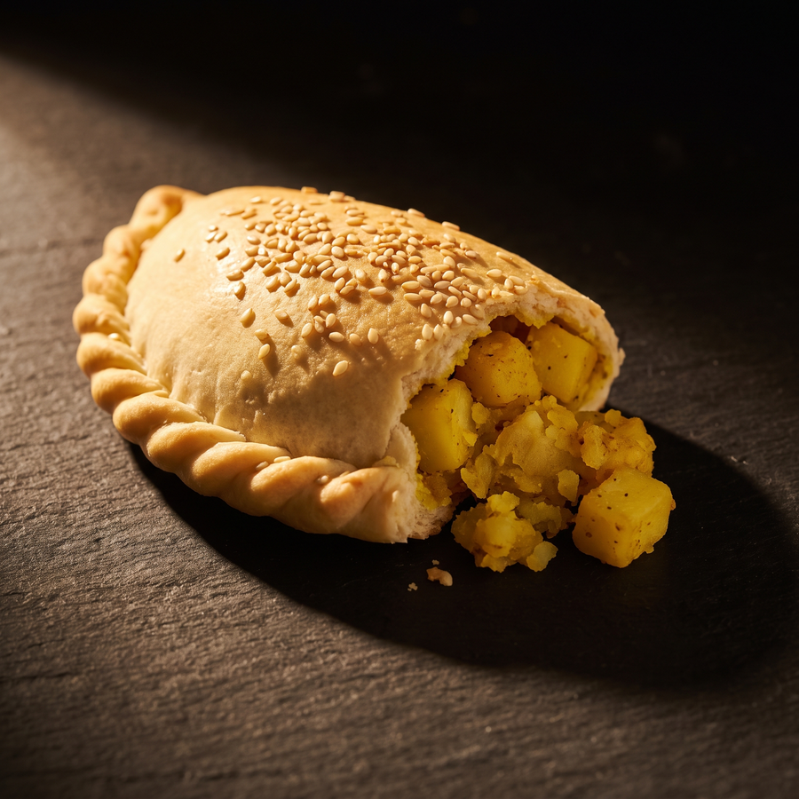
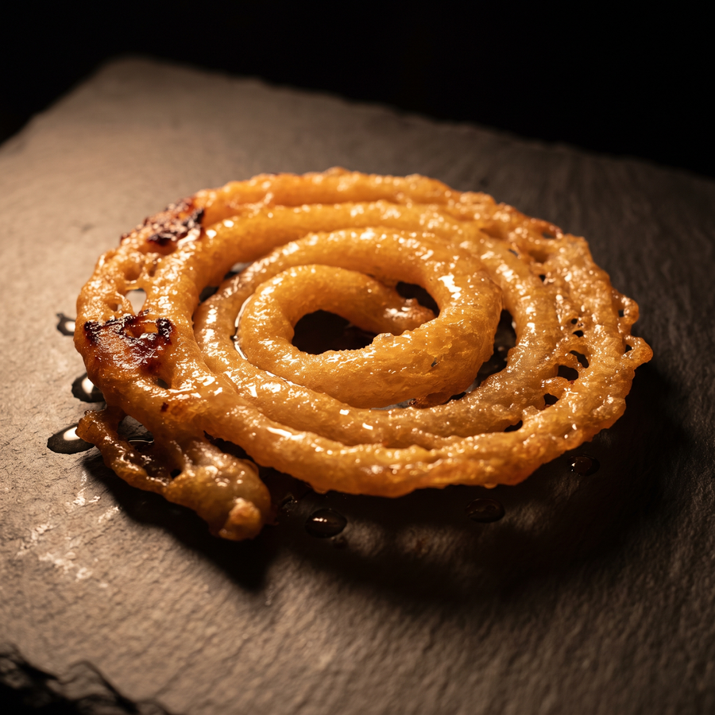
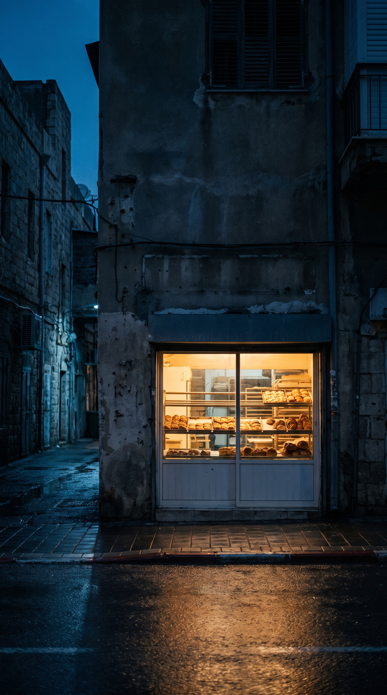

בשתיים בלילה הרחוב הזה מריח מתנור
אופים עד 05:30 · נשארו עוד שלוש שעות
שכבות על שכבות, גבינה שנמסה בפנים

בצק רך, תפוח אדמה מתובל, שומשום
קדאיף חם, גבינה שנמתחת, פיסטוק

מטוגנת עכשיו, טובלת בסירופ, עוד חמה

הרחוב חשוך.החלון הזה לא.